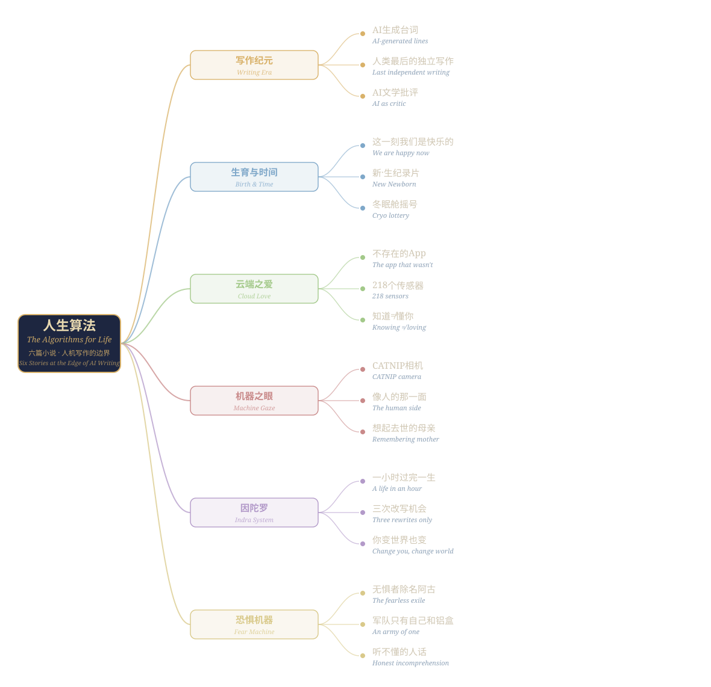

人生算法
〇 · 书籍信息
基本信息
| 书名 | 《人生算法》——陈楸帆的 AI 主题科幻集，六篇故事各配一段机器代码式标题（System.out.println），全书在「人类写作与机器写作的边界」上做实验 |
|---|---|
| 作者 | 陈楸帆：科幻作家、《荒潮》作者，长期关注科技异化与社会风险——这一本他索性把 AI 请进写作现场：与王咏刚合作，让 AI 程序生成《恐惧机器》中「分裂者」的台词 |
| 结构 | 六篇：《这一刻我们是快乐的》《美丽新世界的孤儿》《云爱人》《造像者》《人生算法》《恐惧机器》——代际、冬眠、虚拟爱人、AI 相机、轮回机器、恐惧回路，六个切口合围同一命题 |
| 体裁 | 科幻实验文本：序言作者王咏刚称之为「人类最后一个独立写作的纪元」的标本——小说本体与写作方法论互为证据 |
| 一句话 | 算法可以计算一切，唯独算不了「你变了，整个世界都会跟着你变」——人生的算法，是无法回滚的因果。 |
一 · 核心主题总览
六个故事合围出四组母题：① 写作的边界
王咏刚的序言即是宣言：「人工智能的诞生，是人类有史以来第一次，也很可能是最后一次，人类能够与一种异于自身的智慧形式进行有效交流，甚至携手创造全新的文艺内容。」《恐惧机器》中分裂者的台词由 AI 自动生成——文本本身成了人机协作的现场记录。
② 可改写的人生
《人生算法》里的「因陀罗」系统：每秒计算 10 个地球日，一小时模拟完一个人的一生，全身状况只允许三次改写——「因陀罗不是一个线性游戏，不是你选了什么，就会有对应的故事线和结局。你变了，整个世界都会跟着你而变」——轮回不是重来，是因果的无限分岔。
③ 机器之眼
《造像者》的 AI 相机 CATNIP 拍出了宠物「特别像人的那一面」，让主人瞬间想起去世的母亲；《云爱人》里一句「你撒谎的样子真可爱，别忘了你手里还握着218个传感器呢」——机器的眼睛越来越准，人心的震颤越来越真。
④ 恐惧的底价
《恐惧机器》的战士阿古是全队唯一无法关闭恐惧回路的人——「亿万年进化而来的底层原始恐惧包，你无法用自主意识来抑制它」。无惧者战无不胜，但害怕的男孩活成了人：恐惧不是 bug，是人类最后的护城河。
二 · 第一段 序 · 独立写作的纪元—— AI 游戏 · 代码标题 · 六篇小说 ——
一次 AI 游戏
王咏刚的序言交代了实验全貌：训练语料是陈楸帆既往的十几部小说，外加赫胥黎、克拉克、吉布森、斯蒂芬森——「小说中，分裂者所说的话其实都是由 AI 程序自动生成的」。AI 生成文本的效果耐人寻味：「重重追逐着人类发现的触觉，以及即将看清左右的囚笼」——语法破碎，意境却诡异地成立；阿古的回答是「我怎么……听不懂你说的话……」——听不懂，恰恰是两种智慧相遇时最诚实的反应。序言还演示了 AI 文学批评的可能：阅读器里的划线与标注就是「美/不美」的原始标注——「我们是不是已经可以说AI拥有了初步的文学批评能力？」。
◆ 语言学习 · 概念 · 人机写作
| AI游戏 | 让 AI 用既有语料生成小说台词的写作实验——本书的方法论内核 |
|---|---|
| 分裂者 | 《恐惧机器》中的角色：台词全部由程序生成——机器第一次「出演」反派 |
| 文本分类器 | 基于划线/标注训练的「美/不美」判别——AI 批评的原始形态 |
| 仿哈利·波特 | AI 生成小说的著名案例：统计意义上的语词重排 |
句型 ｜ 「楸帆向人类解释科技的异化作用与社会风险，我则向机器解释人类的懒惰天性与趋利本能。」——序言的对仗句定下全书双声部：作家写人，工程师写机器，书是两条声轨的合成。
六篇小说的地图
每篇以一段 Java 代码开场——System.out.println 打印出篇名，像每篇故事的「启动指令」。《这一刻我们是快乐的》用伪纪录片剪辑生育史（2040 年的影像人类学课程作业）；《美丽新世界的孤儿》从「最后一批幸运儿将在今天进入冬眠舱」的新闻开始；《云爱人》《造像者》《人生算法》《恐惧机器》——六段代码，六个世界：统一的形式感让散装短篇读成了一部长篇的六个变奏。
◆ 语言学习 · 结构 · 形式实验
| 代码标题 | 每篇开头的 println 语句——故事在机器语境中「编译启动」 |
|---|---|
| 伪纪录片 | 《这一刻》的文体：字幕、画外音、受访者编号——纪实外壳装虚构内核 |
| 六篇变奏 | 生育/冬眠/爱情/创作/记忆/恐惧——同一命题的六种数据格式 |
| 黑场/黑起 | 影视转场术语入小说——文本自带镜头语言 |
习语 ｜ 「人类最后一个独立写作的纪元」——序言的断代史句式：这本书自我定位为标本——在 AI 参与写作成为常态之前，人类独立完成的最后一次实验记录。
三 · 第二段 机器之眼 · 生育与爱—— 快乐 · 冬眠 · 云端的爱人 ——
这一刻我们是快乐的
首篇以伪纪录片形式展开：2015 年北大「影像人类学」课程的一份作业《新·生》，追踪 25 年间全球生育技术的变迁——基因测序、人造子宫、代际伦理。「是什么让你有了生宝宝的想法？」的提问穿透受访者群体——企业家、艺术家、普通人。科技的进步把生育从命运变成选项，而选项一多，「快乐」反而成了需要反复自我确认的东西——篇名像一句截图发朋友圈的文案，读完全文再回头看，只觉得它像系统提示。
◆ 语言学习 · 概念 · 生育技术
| 影像人类学 | 虚构课程设定：用镜头记录生育的科技化——人类学的未来分支 |
|---|---|
| 代际长度 | 25 年影像跨度 = 人类一个代际的平均长度——时间的度量单位 |
| 生育选项化 | 从「命运」到「决策」：技术把最古老的人生议题变成了配置项 |
| 自然生育 | 被技术不断重新定义的基线——「自然」本身成了历史概念 |
句型 ｜ 「是什么让你有了生宝宝的想法？」——纪录片式的开放问句：全书用访谈的语法对抗小说的独白——让未来由证人说出，而不是由作者断言。
云爱人与造像者
《云爱人》里，一个并不存在的 App 向刚结束间隔年的曾零星发来几十条未读消息：「我想我是真的爱上你了。」——ID 是一串灰蓝卡通头像。《造像者》则让 AI 相机 CATNIP 与人类摄影师同台竞技：它拍宠物「窝夫」拍出了「特别像人的那一方面」——「它像看着同类一样看着我们……有那么一瞬间，我想起了去世的母亲」。两条线索的合流点在「凝视」：被机器看见，是一种从未有过的被爱错觉。
◆ 语言学习 · 概念 · 凝视与情感
| 云爱人 | 云端生成的恋人人格：不知来处、无处不在——情感服务的极端形态 |
|---|---|
| CATNIP | AI 相机：专为捕捉「神态」而非「可爱」设计——机器的审美意图 |
| 像人的那一面 | 机器之眼看到的人性残留——本书最温柔的技术指标 |
| 传感器 | 218 个传感器的自白——数据时代情感的底层硬件 |
习语 ｜ 「你撒谎的样子真可爱，别忘了你手里还握着218个传感器呢。」——云爱人的情话兼技术警告：亲密关系的尽头，是把「知道你的一切」错认成「懂你」。
四 · 第三段 轮回机器 · 人生算法—— 因陀罗 · 三次改写 · 因果分岔 ——
因陀罗系统
同名主打篇：韩小华兄弟先后进入「因陀罗系统」——全玻璃钢大厦里的顶级虚拟人平台，基因测序与脑神经连接组测绘的数据上传成虚拟人模型。「你依然是你，你既在那里，又在这里，这就是因陀罗的奇妙之处……你有选择的权利，但也需要承担相应的后果……你的身体状况，只允许有三次改写的机会」——系统对速率的控制精确到神经：跑得太快会神经过载，读写太频繁会损伤海马体。
◆ 语言学习 · 概念 · 轮回工程
| 因陀罗 | 取自印度神话的天帝之名：轮回系统——制造现实的机器 |
|---|---|
| 三次改写 | 肉身限定的重开次数——比游戏苛刻，比人生宽松 |
| 连接组测绘 | 脑神经连接的全图扫描——虚拟人的数据地基 |
| 海马体 | 记忆的中枢：系统速率设置的生理红线——遗忘即崩溃 |
句型 ｜ 「如果一个人能活100岁，那么一个小时左右机器就能模拟完他的一生。」——换算句是全书最冷的钉子：百年人生折算一小时——被压缩的还有你当真的那一切。
非线性的因果
哥哥韩大华在商业巅峰投资了因陀罗，以为找到了「重新开启人生的不二法门」——「只不过这扇法门每次打开都是通往完全不同的人生，而每一段人生都将改写他的算法」。弟弟最后看清了它的本质：「它更像是一台制造现实的机器，能够从任意一点分岔出无穷无尽的可能性。而在那一个世界里，你所体验到的就是真实存在的，无论是以比特、量子还是神经脉冲的形式」——问题只剩一个：改写过的你，还是你吗？
◆ 语言学习 · 概念 · 因果分岔
| 非线性游戏 | 因陀罗的第一定律：没有预设故事线——世界随你而变 |
|---|---|
| 改写算法 | 每段虚拟人生都会反写主人的「人生算法」——玩着玩着就换了内核 |
| 制造现实 | 系统的本质：不是回溯记忆，是即时生成世界 |
| 监管僵局 | 技术因高昂成本与监管意见悬置——极少数人的特权技术 |
习语 ｜ 「因陀罗不是一个线性游戏……你变了，整个世界都会跟着你而变。」——全书题眼级台词：人生算法的定义式——你与世界的耦合系数恒为一。
五 · 第四段 恐惧机器 · 人类的底线—— 无惧者 · 铝盒 · 分裂者 ——
阿古的军队
基因设计的少年战士团「无惧者」战无不胜——他们能像眨眼一样关闭恐惧回路。唯有阿古生着无法关闭恐惧的缺陷，一声来不及分析的尖叫让全队把他除名。「男孩们把几名战友的尸体肢解分装好，装进铝制真空盒里，这在过去漫长的经验中被证明能够救命。」——战争持续「2分36秒18」，精确到小数点的暴力，与「齐声唱起一首古老的歌谣」的庆祝并置——被设计成完美武器的孩子，恰恰失去了成为人的资格。
◆ 语言学习 · 概念 · 恐惧工程
| 无惧者 | 关闭恐惧回路的设计战士——胜利者的物种名 |
|---|---|
| 恐惧回路 | 杏仁核-前额叶的刺激反应模块——亿万年进化的底层代码 |
| 除名仪式 | 「为了父亲的使命」——集体意识斩断触须的一瞬 |
| 铝盒 | 战友尸体的真空分装盒——军队唯一的行李，也是阿古的全部 |
句型 ｜ 「他的军队只有自己，和那个留在地上的铝盒。」——全书最短的军队编制：一个人的军队恰恰是完整的人——恐惧让他掉队，也让他成军。
分裂者的台词
《恐惧机器》后半，分裂者登场——它的每一句话都由 AI 程序自动生成：「除了危险，作为这样的真神，我们都没有。他们在最后的物质和痛苦、自然、最死的时间、文字、变的、金钱与宇宙、看似遥远的世界中移动……」语法破碎，意象却从缝隙里漏出光。序言作者直言这是「一种前所未有的写作体验」：人写出情节与节奏，机器贡献「人类语法装不下的梦话」——恐惧机器真正的名字，也许是语言的裂缝本身。
◆ 语言学习 · 概念 · 机器语言
| 分裂者 | AI 生成的角色：以破碎语法说话——机器在小说里的代言人 |
|---|---|
| 语料库 | 陈楸帆 + 赫胥黎/克拉克/吉布森/斯蒂芬森——AI 的文学血统 |
| 词级RNN | 序言注脚里的实现：基于字符循环网络的文本生成 |
| 听不懂 | 阿古对分裂者的回答——人机之间最诚实的距离 |
习语 ｜ 「我怎么……听不懂你说的话……」——阿古的回答成为全书最后的对话：在两个物种真正相遇的地方，第一句人话是承认听不懂。
六 · 人物图鉴与成长弧线—— 主角配角 · 一张表看穿 ——
主要人物
陈楸帆——作者与实验设计者：科幻作家——把 AI 请进写作现场的人；六个故事各自追问同一件事：技术改写人性时，人性还剩什么不可改写
王咏刚——序言作者、AI 工程师、《恐惧机器》的共同实验者——训练了生成台词的 AI，也为全书写下「最后一个独立写作纪元」的判词
韩小华 / 韩大华——《人生算法》兄弟：先后进入因陀罗系统——哥哥在无限改写中迷失，弟弟负责看清系统本质：本书哲学段落的双主角
阿古——《恐惧机器》主角：全队唯一无法关闭恐惧回路的战士——被除名的缺陷者，唯一的幸存者：恐惧是他的人性签证
次要人物（功能位）
| 曾零星 | 《云爱人》主角：刚结束间隔年的女孩——被一个不存在的 App 告白，云端之爱的试验品 |
|---|---|
| 杜若飞 | 《美丽新世界的孤儿》主角：拖欠稿费的翻译，从漫长梦中醒来发现世界停在昨天——冬眠时代的掉队者 |
| 「窝夫」的主人 | 《造像者》中的受访者：AI 相机拍出爱宠「像人的那一面」，让她想起去世的母亲——机器之眼的第一滴泪 |
| 分裂者 | AI 生成的台词角色——语法破碎的「真神」：机器第一次在文学里拥有自己的口音 |
七 · 主题与象征—— 每个道具都在说话 ——
| 代码标题 ↔ 启动指令 | 每篇以 println 开场——小说被写成程序：故事即编译产物 |
|---|---|
| 因陀罗 ↔ 轮回 | 印度天帝之名——改写人生不是重来，是分岔：世界随你而变 |
| 铝盒 ↔ 人性行李 | 阿古的全部军备——恐惧者比无惧者多出一样东西：在乎 |
| 冬眠舱 ↔ 掉队者 | 「最后一批幸运儿」——被时代冻结许可的孤儿的隐喻 |
| 218 个传感器 ↔ 亲密 | 云爱人的情话兼底牌——数据时代的爱：知道一切，不懂一分 |
八 · 写作手法赏析—— 怎么写，就能怎么学 ——
① 人机合写
分裂者台词由 AI 生成——把写作方法做成内容本体：方法即文本
② 文体拼贴
伪纪录片、代码、访谈、新闻——六篇六种文体，构成对未来的多机位拍摄
③ 意象冷热对撞
2 分 36 秒的战争与古老的歌谣、传感器与情话——让数字的冷与肉身的暖在句内相撞
④ 系列自洽
六篇共享「算法介入人生」母题——短篇集做出了长篇的纵深
九 · 名段欣赏—— 原文精读 · 逐段赏析 ——
十 · 金句摘录—— 14 条 · 中英对照 · 带出处 ——
"人工智能的诞生，是人类有史以来第一次，也很可能是最后一次，人类能够与一种异于自身的智慧形式进行有效交流，甚至携手创造全新的文艺内容。"—— 序 · 王咏刚
"楸帆向人类解释科技的异化作用与社会风险，我则向机器解释人类的懒惰天性与趋利本能。"—— 序
"即便不考虑未来的可能性，我们是不是已经可以说AI拥有了初步的文学批评能力？"—— 序
"最后一批幸运儿将在今天进入冬眠舱。"—— 美丽新世界的孤儿
"当然，也有可能是人工智能。"—— 美丽新世界的孤儿
"你撒谎的样子真可爱，别忘了你手里还握着218个传感器呢。"—— 云爱人
"我想它捕捉到「窝夫」身上特别像人的那一方面……它像看着同类一样看着我们……有那么一瞬间，我想起了去世的母亲。"—— 造像者
"因陀罗不是一个线性游戏，不是你选了什么，就会有对应的故事线和结局。你变了，整个世界都会跟着你而变，这是它的奇妙之处。"—— 人生算法
"你依然是你，你既在那里，又在这里，这就是因陀罗的奇妙之处……你有选择的权利，但也需要承担相应的后果。"—— 人生算法
"如果一个人能活100岁，那么一个小时左右机器就能模拟完他的一生。"—— 人生算法
"它更像是一台制造现实的机器，能够从任意一点分岔出无穷无尽的可能性。"—— 人生算法
"亿万年进化而来的底层原始恐惧包，你无法用自主意识来抑制它，就算你再怎么勇敢也不行。"—— 恐惧机器
"战争只持续了2分36秒18。"—— 恐惧机器
"他的军队只有自己，和那个留在地上的铝盒。"—— 恐惧机器
十一 · 拓展阅读—— 原文 · 词条 · 译文 ——
十二 · 个人感悟与心得—— 三点心得 ——
三点感悟
① 恐惧是资产
《恐惧机器》的反直觉结论：无惧者战无不胜却不再是人，恐惧者掉队却保住了自己。情绪不是待优化的 bug，是亿万年进化的安全补丁——在一切都追求可计算的时代，保留一点不可计算的部分，就是保留做人的资格。
② 改写要有次数
因陀罗只给三次改写，是全书最深刻的设定：无限重来的人生等于取消人生——选择的意义恰恰由不可逆性供给。现实中没有因陀罗，但每一次「假装可以从头再来」的拖延，都在偷偷消耗这三次额度。
③ 听不懂也很珍贵
阿古对分裂者说「我怎么听不懂你说的话」——两种智慧相遇时，诚实的不理解好过假装的理解。承认听不懂，是对话的起点；假装听懂了，才是失联的开始。
六篇小说读完，最难忘的反而是那句温柔的情话兼警告：「别忘了你手里还握着218个传感器呢」——爱可以被计算，但被爱的感觉，永远是自己发出来的。
十三 · 一页速查（复习用）
| 六篇地图 | 快乐/冬眠/云爱人/造像者/人生算法/恐惧机器——生育·时间·爱情·创作·记忆·恐惧 |
|---|---|
| 人机写作实验 | 分裂者台词由 AI 生成——「人类最后一个独立写作的纪元」的方法论标本 |
| 因陀罗三定律 | 非线性游戏 · 世界随你而变 · 只许三次改写——轮回的工程学 |
| 机器之眼 | CATNIP 拍出「像人的那一面」——凝视成为新的情感界面 |
| 恐惧的底价 | 无法关闭恐惧的阿古成了唯一完整的人——情绪是进化的安全补丁 |
十四 · 全书思维导图—— 一图纵览 ——

一图纵览全书骨架 · 中英双语对照 · 手机端可左右滑动查看全图